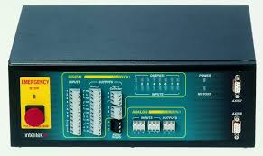
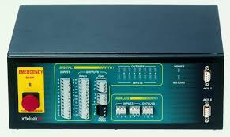

Introduction
Scorbot E4 RU is a smart educational robot that can do many things. It works even better when it's connected to digital inputs. The digital signals to the controller when integrated with the controlling software, Scorbase, can move the robot to the pretrained positions. Let us jump into that.
Scorbot
Scorbot, a leading robotic platform developed by Intelitek, embodies versatility and precision in its design and functionality. With its multiple degrees of freedom and adaptable end-effectors, Scorbot manipulators excel in performing intricate tasks across various industries. Renowned for their reliability and user-friendly interfaces, Scorbot arms empower users to program and deploy robotic solutions with ease. Whether in manufacturing, education, or research, Scorbot's intuitive design and advanced capabilities make it a preferred choice for applications demanding precision and efficiency in robotic operations.
Controller
The controller in Scorbot is like its brain and backbone combined. It's what makes everything work smoothly. This controller isn't just a passive part; it actively interacts with both analog and digital devices outside the robot. It takes orders from the Scorbase software, the control program for the robot, and turns them into real-world actions. Plus, it provides the power needed to make the robot move effectively. With analog and digital inputs, it can connect to various sensors and switches, giving Scorbot the ability to sense and respond to its surroundings. Whether it's picking up objects or avoiding obstacles, the controller ensures Scorbot operates accurately and reliably.
Scorbase
Scorbase, the proprietary software accompanying Scorbot robotic arms, serves as the digital brain that drives their functionality. With Scorbase, users gain access to a comprehensive programming interface that simplifies the deployment and control of Scorbot manipulators. This software enables seamless integration of Scorbot into diverse workflows, offering tools for trajectory planning, task sequencing, and real-time monitoring. Whether programming complex automation routines or teaching new tasks through intuitive interfaces, Scorbase empowers users to unleash the full potential of Scorbot robotics with efficiency and precision.
 

Training the Scorbot
Let's check out how we can teach or train the Scorbot its position. First, you need to open Scorbase, then go to file and select new project. Now you can see many options on the right side and a blank white box on the right side which is where you write your code. Before jumping directly into the code, let me explain some commands which we are going to use. As you can see, I selected an option called label. Label can be said as a function. Inside the label, we can write our instructions and conditions. Here you can see the If input box. With this, we can add conditions to our functions.
Here I labelled MOVEMENT 1, put a WAIT condition, added an instruction, now I want to add or teach a position so that the robot could move to that position. Make sure you select online from the options on the menu bar before performing this, because only after that can you move your robot. Before starting training, press home on the menu bar. Now for setting positions, you can see just below the text editor, a box called manual movement in which you can see many buttons 1,2,3,Q,W,E..etc. Using that you can move the robot. After moving the robot, go to teach position, mark it as 1 or whatever you want and click on the blue robot symbol, to ensure the position you moved the robot is recorded.
Now you can use Go To Position to set target positions to move the robot. You can write your own code with these commands. After that, you can execute the program by clicking run >> single/continuous cycle.
Here I will provide you with a code which I wrote to run my robot:
INPUTS:
If Input 1 Off Jump to MOV1
If Input 2 Off Jump to MOV2
If Input 3 Off Jump to MOV3
If Input 4 Off Jump to MOV4
Jump to INPUTS
MOV1:
Go to Position 1 Speed 10
Jump to INPUTS
MOV2:
Go to Position 2 Speed 10
Jump to INPUTS
MOV3:
Go to Position 3 Speed 10
Jump to INPUTS
MOV4:
Go to Position 4 Speed 10
Jump to INPUTSThe logic of this code is very simple. The code keeps checking if there are any inputs coming at the input pins. And whenever a digital input is entered into any of the digital input pins of the controller, the robot moves its arm to the targeted position. After executing the instruction, it will keep on checking. The jump-to condition after the if conditions makes a loop to monitor continuously. If it finds something, it jumps to the label named mov1 or others. Then back to the first label, which is input after executing it.
Here is the movements which i trained my robot.
Arduino Code
For input digital signals, I wrote a code in Arduino IDE and chose an Arduino Uno as my input option. The code is written in such a way that whenever I press either a,b,c, or d, it will make the output digital pins 10,11,12, or 13 high respectively.
const int led1 = 10;
const int led2 = 11;
const int led3 = 12;
const int led4 = 13;
void setup() {
Serial.begin(9600);
pinMode(led1, OUTPUT);
pinMode(led2, OUTPUT);
pinMode(led3, OUTPUT);
pinMode(led4, OUTPUT);
}
void loop() {
if (Serial.available() > 0) {
char command = Serial.read();
if (command == 'a') {
digitalWrite(led1, HIGH);
digitalWrite(led2, LOW);
digitalWrite(led4, LOW);
digitalWrite(led3, LOW);
Serial.println("pin 10 is high");
delay(3000);
digitalWrite(led1, LOW);
digitalWrite(led2, LOW);
digitalWrite(led3, LOW);
digitalWrite(led4, LOW);
} else if (command == 'b') {
digitalWrite(led2, HIGH);
digitalWrite(led1, LOW);
digitalWrite(led3, LOW);
digitalWrite(led4, LOW);
Serial.println("pin 11 is high");
delay(3000);
digitalWrite(led1, LOW);
digitalWrite(led2, LOW);
digitalWrite(led3, LOW);
digitalWrite(led4, LOW);
} else if (command == 'c') {
digitalWrite(led3, HIGH);
digitalWrite(led2, LOW);
digitalWrite(led1, LOW);
digitalWrite(led4, LOW);
Serial.println("pin 12 is high");
delay(3000);
digitalWrite(led2, LOW);
digitalWrite(led1, LOW);
digitalWrite(led3, LOW);
digitalWrite(led4, LOW);
} else if (command == 'd') {
digitalWrite(led4, HIGH);
digitalWrite(led2, LOW);
digitalWrite(led3, LOW);
digitalWrite(led1, LOW);
Serial.println("pin 13 is high");
delay(3000);
digitalWrite(led4, LOW);
digitalWrite(led2, LOW);
digitalWrite(led3, LOW);
digitalWrite(led1, LOW);
}
}
}The connection from arduino uno's digital to controller's digital inputs.Make sure that ground is connected.
Execution
Here is the Arduino IDE serial monitor and terminal, where I enter the value.
This is the video of the execution of the code and the robotic movement.
Conclusion
In general, we executed the Arduino Uno code to run the Scorbot using digital signals along with familiarizing ourselves with the Scorbot, Scorbase, and its controller. We learned how to use some basic commands to build a code in Scorbase.